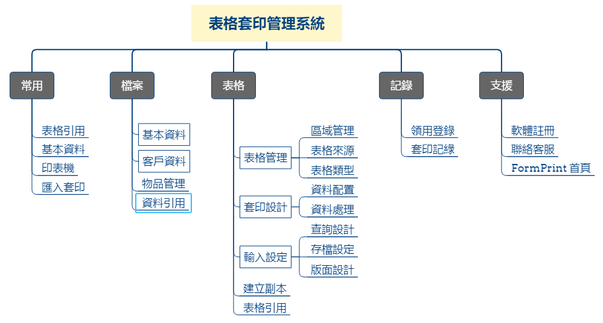

軟體架構

表格套印管理系統架構圖
功能說明：
- 表格套印管理系統首頁：軟體的主要視窗，也是逐(單)筆套印的工作視窗。
- 常用：匯集常用的套印功能，日常的套印工作在這裏就可以全部完成。
- 表格引用：將設計好的表格設定檔進行分享，引用表格設定檔，就能讓軟體支援該表格的套印工作。
- 基本資料：管理使用者的基本資料及相關帳號，這些資料將用於表格套印。
- 印表機：設定表格套印時所使用的印表機、提供列印大小、列印方向及邊界設定等功能。
- 匯入套印：以匯入(讀取)檔案的方式，完成套印工作。
- 檔案：管理套印時期及套印後的相關資料。
- 基本資料：管理使用者的基本資料及相關帳號，這些資料將用於表格套印。
- 客戶管理：管理支票收票人、匯款單、郵局劃撥單的收款人、信件的收信人...等資料。
- 物品管理：管理二聯式、三聯式手開發票的品名項目或是會計科目等相關資料。
- 資料交換：提供資料匯入或匯出的功能，例如將「客戶資料」匯入匯出功能。
- 表格設計：可對表格的增減，套印內容制定，以及輸入、存檔方式的規劃進行調整。
- 表格管理：可以編輯管理與表格有關的訊息。
- 套印內容管理：設定實際套印於表格上面的內容，字體大小、顏色，圖案的大小、數量、位置等。
- 資料配置：針對使用者輸(匯)入的資料進行配置，例如將日期分配給3個套印項目(年、月、日)…等設定。
- 資料處理：針對使用者輸(匯)入的資料進行處理，例如將日期切割為3個年、月、日或者將「1000」轉為「新臺幣壹仟元整」等資料處理。
- 輸入設定：
- 主要功能：。
- 設計使用者輸入介面，例如自動帶入帳號、提供關鍵字搜尋，保留輸入資料...等。
- 可以增加查詢欄位，以輸入代號(如銀行帳號、客戶編號)的方式同時取得多種資料。
- 設定各式操作強化及輔助資料輸入(例如限定輸入數字)。
- 子視窗功能：
- 查詢設計：可設計使用輸入客戶代號或關鍵字的方式，可以取得客戶的相關資料或是合併欄位資料。
- 存檔設定：可將列印後的資料進行存檔，並可作為「匯入套印」檔案格式的依據。
- 版面設計：當輸入項目少於20個項目時，採用系統預設的一欄式輸入方式即可，但如果表格輸入項目超過20個導致發生輸入不便的問題，或者使用者想要自行設計輸入介面，均得由此功能進行輸入版面設計。
- 表格副本：同一個表格有多種版本時使用。例如在同一家銀行有多個支票帳號，因領取到不同年度製作的支票，支票的格式可能會不一致，利用表格副本功能，可依不同帳號分別產生設定檔副本後，再依需要調整套印內容。
- 表格匯入(出)：將設計好的表格設定檔進行分享，本軟體已建置數十個表格設定檔，可以利用網路匯入的方式，增加使用者需要的表格設定檔，不需設定只用匯入的方式，就能讓軟體支援該表格的套印工作。
- 紀綠：將套印過程保留下來供後續查詢。
- 領用登錄：有編號的表格(例如支票、開票)，可以先將票號登錄，系統於套印時，可將套印資料與表格編號進行聯結，以利套印後進行查詢、管理。
- 套印記錄：查詢套印記錄的歷史資料(如某個月的應付票款)。
- 支援：尋求協助以便執行套印作業。
- 軟體註冊：申請及執行註冊，註冊後可以讓軟體得到保固服務。
- 聯絡客服：使用及操作本軟體如有發現任何問題，都歡迎與我們聯絡。
- FormPrint 首頁：可連結至本工作室網站，取得最新的操作說明。